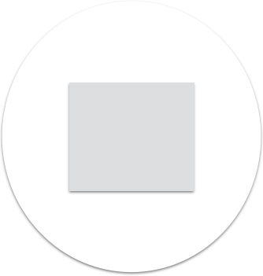
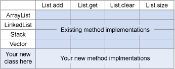

<!DOCTYPE html><html lang="en"></html><head><meta charset="utf-8"><title>reveal.js - The HTML Presentation Framework</title><meta name="description" content="A framework for easily creating beautiful presentations using HTML"><meta name="author" content="Hakim El Hattab"><meta name="apple-mobile-web-app-capable" content="yes"><meta name="apple-mobile-web-app-status-bar-style" content="black-translucent"><meta name="viewport" content="width=device-width, initial-scale=1.0, maximum-scale=1.0, user-scalable=no, minimal-ui"><link rel="stylesheet" href="css/reveal.css"><link id="theme" rel="stylesheet" href="css/theme/black.css"><!-- Code syntax highlighting--><link rel="stylesheet" href="lib/css/zenburn.css"><!-- Printing and PDF exports--><link rel="stylesheet" href="css/extra-components.css"><script>var link = document.createElement( 'link' );
link.rel = 'stylesheet';
link.type = 'text/css';
link.href = window.location.search.match( /print-pdf/gi ) ? 'css/print/pdf.css' : 'css/print/paper.css';
document.getElementsByTagName( 'head' )[0].appendChild( link );</script><!--if lt IE 9script(src='lib/js/html5shiv.js')
--></head><body><div class="reveal"><!-- Any section element inside of this container is displayed as a slide--><div class="slides"><section><strong>Highly Cohesive Software Programming</strong></section><section><p>let's pretend you're a software engineer</p><p class="fragment">Senior Jawa Developer</p><!-- TODO: jawa picture--><aside class="notes">Let's pretend you're a software engineer
Let's say I have a mythical language called Jawa,</aside></section><section><p class="fragment dimafter">new feature</p></section><section><p class="fragment dimafter">a service to upload translations to ci</p><p class="fragment">ci-3po</p></section><section><p class="fragment dimafter">awesome. </p><p class="fragment dimafter">Your teammate just finished a tool to convert resources into d3 visualizations in jawa</p><p class="fragment">r2d3</p><aside class="notes">and they push it up</aside></section><section><p>let's make them work together</p><p class="fragment">oh dear</p><aside class="notes">It turns out, r-2-d3 and ci-3po were both mutating the same file resources
you see, r2d3 was built unextensibly</aside></section><section><p>They're tangled together</p><div class="fragment"></div><aside class="notes">you have to hack them apart</aside></section><section><p>Programming can be like wiring up a switchboard</p></section><section><aside class="notes">If two people really far away keep calling each other, it'd get pretty tiring to wire them up</aside></section><section><aside class="notes">And can you imagine, if every time you had to call someone, you had to call another operator?</aside></section><section><p>`Cohesion`: Nearby things are related</p></section><section><p>`Tight Coupling`: Unrelated things cannot be separated</p></section><section><p>Cohesion is a spectrum</p><p class="fragment">has 2 sides, light and dark</p><aside class="notes">Extensibility is a spectrum.
You can go all in on extensibility, or you can make
it impossible for others to play in your walled garden</aside></section><section><p>High Cohesion</p><p class="fragment replaceafter">Enables MVC</p><p class="fragment replaceafter">Minimizes changes to code</p><p class="fragment replaceafter">Makes things easier to test</p><p class="fragment">Enables Separation of Concerns</p></section><section><p>High Cohesion: Make things easy to understand<p class="fragment replaceafter"><em>source: http://xkcd.com/657/</em></p><p class="fragment"><em>source: http://xkcd.com/657/</em></p></p><aside class="notes"><p>star wars may seem complicated,</p><p>but really, it has many characters that</p><p>come together occasionally, and then have their own story</p><p>compared to primer, with very few characters, is nearly incomprehensible</p><p>a movie, about time travel</p></aside></section><section><p>Overview</p><ul><li class="fragment dimafter">"object oriented" programming</li><li class="fragment dimafter">cohesiveness?</li></ul></section><aside class="notes"></aside><section><p>What is object oriented Programming, anyway?</p></section><section><p>OO, the great pancea?</p></section><section><Most>people misunderstand what it is</Most></section><section><Most>schools start out with something like this</Most><pre class="fragment dimcode">class Point {
  final int x, y
 
  public int getX() { return x }
  ...</pre></section><section><p>lisp</p><pre class="fragment dimcode"> 
(lambda () x)
 </pre><aside class="notes">Not too different from a lambda function in a functional language</aside></section><section><pre class="fragment dimcode"> 
(lambda (var) 
  (cond (= var "x") 
    x 
    y))
 </pre><aside class="notes">Ok, maybe one that determines if it should return x or y</aside></section><section><p>C</p><pre class="fragment dimcode"> 
point-&gt;x
 </pre></section><section><p>ok, does mutation help?</p><pre class="fragment dimcode">class Point {
  int x, y
 
  public void setX(int x) { this.x = x }
  ...</pre><aside class="notes">Easily represent as a struct in a lower order language
If no mutation</aside></section><section><p>C</p><p>point-&gt;x = 5</p></section><section><p>Besides: Immutability ain't needed</p><pre class="fragment dimcode">class Point {
  int x, y
 
  public Point setX(int newX) { 
    new Point(newX, y) 
  }
  ...</pre><aside class="notes">Value objects, transformed into themself</aside></section><section><pre class="fragment dimcode">class IntPoint implements Point {
  int x, y
 
  public int getX() { return x }
  ...</pre><aside class="notes">Ok, what about when you start representing abstractions?</aside></section><section><pre class="fragment dimcode">class DoublePoint implements Point {
  double x, y
  
  public int getX() { return (int)x }
  ...</pre><aside class="notes">Now you can use the same APIs with different underlying representation</aside></section><section><p>A good example?</p><aside class="notes">is that really a good example though? In this case it's just
data that is varying, not behavior</aside></section><section><pre class="fragment dimcode">class Image implements Drawable {
  int currentFrame = ...
 
  public void draw(Graphics g) { ... }
    ...</pre><aside class="notes">Let's use a behavioral abstraction</aside></section><section><pre class="fragment dimcode">class Gif implements Drawable {
  int currentFrame = ...
 
  public void draw(Graphics g) { ... }
    ...</pre><aside class="notes">Now you can represent new abstractions</aside></section><section><An>object is a first-class, dynamically dispatched behavior.</An><aside class="notes">http://wcook.blogspot.com/2012/07/proposal-for-simplified-modern.html?m=1
dynamic dispatch in C: http://www.cs.rit.edu/~ats/books/ooc.pdf
http://lwn.net/Articles/444910/</aside></section><section><p>Dynamic dispatch is sometimes called </p><ul> <li class="fragment dimafter">"message passing"</li><li class="fragment dimafter">"late binding"</li><li class="fragment dimafter">"dynamic binding"</li><li class="fragment dimafter">"polymorphism" </li></ul><aside class="notes">Polymorphism is what java devs are used to hearing</aside></section><section><p>Optional, but <strong>not essential:</strong></p><ul><li class="fragment">mutable state</li><li class="fragment">inheritance</li><li class="fragment">classes</li><li class="fragment fragment">identity</li></ul></section><section><p>Mutable state</p><aside class="notes">Compose a program of value objects, state changes
through creation of new objects</aside></section><section><pre class="fragment dimcode">class Gif implements Drawable {
  int currentFrame = ...
 <span class="fragment dimcode"><br>  public Pair&lt;Frame, Drawable&gt; draw() { <br></span>   return new Pair(
     getFrame(), 
     new Gif(currentFrame++));
  }
...<aside class="notes">We can create the same Gif by returning
a frame of the image, no mutation required</aside></pre></section><section><p>inheritance</p><aside class="notes">composition can be isometric
Go: Dynamic dispatch
In java, inheritance is a means to achieve dispatch, so essential,
but extends is not:</aside></section><section><pre class="fragment dimcode"> interface Drawable {
   public void draw(Graphics g);
 }</pre></section><section><Others>might pass around that thing</Others><pre class="fragment dimcode"> public void setDrawable(Drawable d);</pre><aside class="notes">Must be something that extends that type</aside></section><section><p>Inherits interface, can be used as type:</p><pre class="fragment dimcode"> public class Gif implements Drawable {
   public void draw(Graphics g) {
 </pre></section><section><p>Does not inherit interface, can't be used</p><pre class="fragment dimcode"> public class Artist {
   public void draw(Graphics g);
 </pre><aside class="notes">Artist doesn't extend the interface, so can't be used.
You could wrap this artist, but there's a lot of downsides there</aside></section><section><p>Go: Interfaces are protocols</p><pre class="fragment dimcode"> type Drawable interface {
   Draw() 
 }</pre><p><em>anything with Draw can be used by anything needing a Drawable</em></p><aside class="notes">Languages like go can define new protocols / interfaces
Existing types didn't inherit them explicitly.</aside></section><section><p>you don't need inheritance in all languages to do polymorphism</p></section><section><p>identity, e.g., ==</p><aside class="notes">Compare by reference</aside></section><section><p>a.id.equals(b.id)</p><aside class="notes">If this is needed for objects, can be added to specific implementation
if things are using this explicitly, it is tightly coupling and preventing
dynamic dispatch on equals, so may cause issues.</aside></section><section><p>Objects are useful</p><p class="fragment">If they have state, they don't expose it</p></section><section><p>Use objects to achieve high level conceptual programming.</p><p class="fragment replaceafter">Law of demeter</p><p class="fragment">Principle of Least Surprise</p></section><section><p>Don't do things to my data, ask me to do things.</p></section><section><p>Law of demeter: </p><p class="fragment">when one wants a dog to walk, </p><p class="fragment">one does not command the dog's legs to walk directly; </p><p class="fragment">instead one commands the dog which then commands its own legs.</p></section><section><p>A method may only call things in direct scope</p></section><section><p>So let's say this circle represents an object with a method</p></section><section><p>It can call a method of it's own class</p><pre class="fragment dimcode">this.draw()</pre></section><section><p>Or methods of objects injected in</p><pre class="fragment dimcode">graphics.draw()</pre></section><section><p>Or methods of objects it made</p><pre class="fragment dimcode">local = new Gif()
local.draw()</pre></section><section><p>Or methods of objects in it's class</p><pre class="fragment dimcode">this.helper.draw()</pre></section><section><p>If you can do it anyway, why am I doing it for you?</p></section><section><p>Law of demeter is about <em>behavior</em> of objects</p></section><section><p>A lot of data is hierarchical</p><pre class="fragment dimcode">"person": [
  "head": [ "hair": "brown", "eyes": "blue" ], 
  "legs": 2]</pre></section><section><p>Can be encoded as objects</p><pre class="fragment dimcode">person = new Person(
  new Head(new Hair("brown"), new Eyes("blue")), 
  new Legs(2), ...)</pre></section><section><p>Does this violate law of demeter?</p><pre class="fragment dimcode">person.hair.color</pre></section><section><p>Here, person is just immutable data-structure</p></section><section><p>Not the same "badness"</p></section><section><pre class="fragment dimcode">public class PersonPainter implements Drawable {
  public PersonPainter(Person p)</pre><aside class="notes">One benefit of immutable abstractions is it makes
parameter lists simpler</aside></section><section><pre class="fragment dimcode">public class PersonPainter implements Drawable {
  public PersonPainter(Hair h, Legs l, ...)</pre><aside class="notes">Could be passing in each individual component.</aside></section><section><p>violating the law</p><pre class="fragment dimcode">public class View {
  public void paint() {<span class="fragment dimcode"><br>    if (personPainter.getPerson()
          .hair().equals("brown") {<br></span>      // Vary paint style
    }</pre><aside class="notes">What happens when a higher level class reaches into
a bheavior object's inner state?</aside></section><section><p>With Inheritance: Easy to add new classes </p><pre class="fragment dimcode">public class PersonPainter implements Drawable {
  public void draw(Graphics g) {
     ...
  }</pre></section><section><pre class="fragment dimcode">public class DogPainter implements Drawable {
  public void draw(Graphics g) {
     ...
  }</pre></section><section><p>New classes for same behaviors through extends</p><div style="background:#fff;"></div></section><section><p>Let's say you want to add a behavior</p><pre class="fragment dimcode"> 
  public void drawOutline(Graphics g) {
 </pre></section><section><pre class="fragment dimcode"> interface Drawable {
   public void draw(Graphics g);<span class="fragment dimcode"><br>   public void drawOutline(Graphics g);<br></span> }</pre></section><section><pre class="fragment dimcode">public class PersonPainter implements Drawable {
  public void draw(Graphics g) {
     ...
  }
 <span class="fragment dimcode"><br> 
  public void drawOutline(Graphics g) {
     ...<br></span></pre></section><section><div style="background:#fff;"></div></section><section><p>Could pull "Painting" behavior into single class:</p><pre class="fragment dimcode">public class Painter {
 
  public void draw(Object o) {
    if (o instanceof Person) {
      ...
    }
    ...
  }</pre></section><section><pre class="fragment dimcode">public class Painter {
 
  public void draw(Object o) {
    if (o instanceof Person) {
      ...
    }
  }<span class="fragment dimcode"><br>  public void drawOutline(Object o) {<br></span>    if (o instanceof Person) {
      ...
    }
    ...
  }</pre></section><section><p>But then, the only way to extend types is to add to every behavior</p><pre class="fragment dimcode">public class Painter {
 
  public drawOutline(Object o) {
    if (o instanceof Person) {
      ...
    }
 
    if (o instanceof Dog) {
      ...
    }<span class="fragment dimcode"><br>    if (o instanceof Cat) {
      ...
    }<br></span>    ...</pre></section><section><div style="background:#fff;"></div></section><section><p>this is known as the `expression problem`</p></section><section><p>There are solutions</p><div style="background:#fff;" class="fragment"><p>Clojure Protocols</p></div></section><section><p>Keep data safe: Don't conflate "Person" with "Painting a Person"</p><p>One is data, the other is behavior</p></section><section><p>Person was just data, wouldn't ask person to paint itself</p></section><section><p>In Java, must make the tradeoff between:</p><ul><li class="fragment">easy type extension</li><li class="fragment">easy behavior extension </li></ul></section><section><p>AVOID mixing concepts:</p><pre class="fragment dimcode">public class PersonPainter implements Drawable {
  public void draw(Graphics g) {
    ...
  }
  
  public Color getHair() {</pre></section><section><p>So that's Object Orientation</p></section><section><p>What leads to High Cohesion?</p></section><section><p>Using SOLID</p><p> <em>Martin Fowler</em></p><ul class="fragment"><li class="fragment dimafter">Single Responsibility </li><li class="fragment dimafter">Open/Closed</li><li class="fragment dimafter">Liskov Substitution</li><li class="fragment dimafter">Interface Segregation</li><li class="fragment">Dependency Inversion</li></ul><aside class="notes">Martin fowler, prominent OO proponent
the solid princples are</aside></section><section><p>not the only advocate</p></section><section><p>unextensible code is unmockable</p><aside class="notes">you see, it's hard to write tests if your code is unextensible</aside></section><section><p>Google Testability Team Testable Software Principles</p><p> <em>Jonathan Wolter, Russ Ruffer, Miško Hevery</em></p><ul class="fragment"><li class="fragment dimafter">Class does too much</li><li class="fragment dimafter">Reaching into collaborators</li><li class="fragment dimafter">Has Singletons</li><li class="fragment">Constructors do real work</li></ul><aside class="notes"></aside></section><section><h2>Holub on Patterns</h2><p> <em>Allen Holub</em></p><ul class="fragment"><li class="fragment dimafter">Extends is evil</li><li class="fragment dimafter">Getters and Setters are evil</li></ul><p></p><aside class="notes">Allen holub promonent JavaWorld, Dr. Dobbs
Consultant</aside></section><section><p>good code</p><aside class="notes">All these share characteristics, some are
guidelines to avoid, some are guidelines to do</aside></section><section><p>examples</p><aside class="notes">I am going to argue there are 2 core Principles
by which all others can be derived, let's understand
what makes code inflexible through example.</aside></section><section><pre class="fragment dimcode"><p>class R2D3 {
  public visualize() {
    ...
  }
}</p></pre><aside class="notes">Let's talk about R2D3.
We said it visualizes resources using d3
a javascript framework</aside></section><section><pre class="fragment dimcode"><p>class R2D3 {
 <span class="fragment dimcode"><br>  public visualize(String projectRoot) {
    List&lt;File&gt; resources = getResources(projectRoot)
    // Visualizer code
  }<br></span> <span class="fragment dimcode"><br>  private List&lt;File&gt; getResources(String projectRoot) {<br></span>    ...
  }
}</p></pre><div class="fragment"> <p><em>multiple-responsibility</em></p></div><aside class="notes"><p>so this visualize task</p><p>calls this getResources method</p></aside></section><section><p>getResources is irreplacable, but irrelevant</p></section><section><p>Unmockable.</p></section><section><p>Testing requires knowledge of internals :(</p><pre class="fragment dimcode"> 
PowerMock.createPartialMock(R2D3.class, 
  "getResources").andReturn(files);
 </pre><aside class="notes">To change the behavior in unit test, you'd have to mock this get resources
method.</aside></section><section><p>Powermock requires looking at internals</p><aside class="notes">a hidden collaborator</aside></section><section><p>No Mocks in production</p><aside class="notes">not like we can use them to replace behaviors.</aside></section><section><p>Implies an iceberg</p><aside class="notes">The need to powermock implies a tight coupling on internal behavior, not
a single responsibility
Not taking advantage of OO facilities to separate behaviors</aside></section><section><p>API exists, why not make it explicit?</p></section><section><p>what if I extend the thing</p><pre class="fragment dimcode"><span class="fragment dimcode"><br>class R2D3 extends FileFinder {<br></span> 
  public visualize(String projectRoot) {<span class="fragment dimcode"><br>    List&lt;File&gt; resources = getResources(projectRoot)<br></span>    // Visualizer code
  }
}</pre><div class="fragment"> <p><em>multiple-responsibility through </em></p><p> <em>extends</em></p></div><aside class="notes">the problem is this method is tightly coupled
to this class's implementation of get resources</aside></section><section><pre class="fragment dimcode"> 
PowerMock.createPartialMock(FileFinder.class, 
  "getResources").andReturn(files);
 </pre><aside class="notes">Still need to mock out the behavior in test, and
if that internal class references something mock-worthy, but it, itself, isnt,
then you get into tree-hierarchy searches that are complicated</aside></section><section><p>Hard to Swap</p><aside class="notes">hard to change behaviors, hard to swap out</aside></section><section><p>ok i'll do it earlier</p><pre class="fragment dimcode"><p>class R2D3 {
  List&lt;File&gt; files;
 <span class="fragment dimcode"><br>  R2d3(String projectRoot) {<br></span>    ResourceService finder = 
      new FileFinder(projectRoot)
    files = finder.getResources()
  }
 
  public visualize() {
    ...
  }
}</p></pre><div class="fragment"><p><em>multiple-responsibility through </em></p><p> <em>constructor coupling</em></p></div><aside class="notes"><p>OK, we can extract FileFinder out</p><p>create it ahead of time in our constructor</p></aside></section><section><p>Testing requires knowledge of internals :(</p><pre class="fragment dimcode"> 
expectNew(FileFinder.class, "projectRoot")
  .andReturn(files);
 </pre><aside class="notes">Now, in order to change the behavior you have to mock out internals.</aside></section><section><h2>avoid new in constructors</h2><p class="fragment">dependency inversion</p><aside class="notes">// TODO: motivate</aside></section><section><p>ok, no new in my constructor!!!1</p><pre class="fragment dimcode"><p>class R2D3 {
  List&lt;File&gt; files;
 
  R2d3(String projectRoot) {<span class="fragment dimcode"><br>    files = FileFinder.getResources(projectRoot)<br></span>  }
}</p></pre><div class="fragment"> <p><em>multiple-responsibility through </em></p><p> <em>Singleton / global coupling</em></p></div><aside class="notes">OK</aside></section><section><p>Testing requires knowledge of internals :(</p><pre class="fragment dimcode"> 
 PowerMock.mockStaticPartial(
   FileFinder.class, "getResources");
 EasyMock.expect(FileFinder.getResources(...))
   .andReturn(files);
 </pre><aside class="notes">Still mocking internals</aside></section><section><p>When do statics improve code?</p><p class="fragment dimafter">no this</p><p class="fragment dimafter">pure functions</p><p class="fragment dimafter">Still is coupling</p><aside class="notes">Avoid bleeding local scope. Handy for pure functions, good no intent to override</aside></section><section><pre class="fragment dimcode">class R2D4 extends R2D3 {
 
  @override
  public List&lt;File&gt; getResources()</pre><aside class="notes">One of the nice things about statics is they prevent inheritance
from being used to replace collaborator behaviors</aside></section><section><p>perfect code</p><pre class="fragment dimcode">class R2D3 {
  final List&lt;File&gt; files;
 <span class="fragment dimcode"><br>  R2d3(List&lt;File&gt; visualizableFiles) {
    this.files = visualizableFiles;
  }<br></span> <span class="fragment dimcode"><br>  public visualize() {
    // visualization code
  }<br></span>}</pre><aside class="notes">A good pattern is to separate
out the concerns and JUST pass in the files
you might also inject it into the
visualize method depending on how it works</aside></section><section><p>perfect is the enemy of good</p><pre class="fragment dimcode"><p>class R2D3 {
  List&lt;File&gt; files;
 <span class="fragment dimcode"><br>  public static R2D3 create(String projectRoot) {
    ResourceService finder = 
      new FileFinder(projectRoot)
    files = finder.getResources()
    return new R2D3(files)
  }<br></span> <span class="fragment dimcode"><br>  R2d3(List&lt;File&gt; visualizableFiles) {
    this.files = visualizableFiles;
  }<br></span>  ...
}</p></pre><aside class="notes">You can make incremental refactorings that
get you closer to ideal. Better than passing
factories everywhere</aside></section><section><p>so that's 'single responsibility'</p></section><section><p>Ci3po: the translator</p><pre class="fragment dimcode">class Ci3po {
  ...
  public translate() {
    ...
  }
}</pre></section><section><pre class="fragment dimcode">class Ci3po {
  ...
  public translate(TaskContainer t) {<span class="fragment dimcode"><br>    List&lt;File&gt; files = t.getByPath(:app:fileFinder").fileFinder.getResources();<br></span>    ...
  }
}</pre><div class="fragment"> <p><em>tightly coupled inputs</em></p></div><aside class="notes">This is tightly coupled, to mock it:</aside></section><section><p>Annoying to mock.</p></section><section><pre class="fragment dimcode">    Ci3po.translate(new TaskContainer() {<span class="fragment dimcode"><br>      public getByPath(String s) {<br></span>        return resourceService
      }<span class="fragment dimcode"><br>      ... (40 more lines of code)<br></span>    })</pre><aside class="notes">If we want to mock just the internal service, we have to
mock the full api, including the 40-some odd methods that are unused</aside></section><section><p>Could have been easier.</p></section><section><pre class="fragment dimcode">    Ci3po.translate(resourceService.getResources())</pre></section><section><p>Cognitive load</p><aside class="notes">The cognitive load to understand mirrors the actual API usage</aside></section><section><pre class="fragment dimcode">interface ResourceService
  public List&lt;File&gt; getResources()</pre><p>vs</p><div class="fragment"><pre class="fragment dimcode">interface ResourceService
  public List&lt;File&gt; getResources()
  public void delete()
  public File find(String path)</pre></div><aside class="notes">if a class doesn't need elements of an interface
  let's not make it more complex because of them</aside></section><section><p>Inevitably:</p><pre class="fragment dimcode">class YourResourceService extends ResourceService
  public delete() {
    throw new UnsupportedOperationException("nooo!")
  }
  ...</pre><div class="fragment"><p><em>tight coupled inputs through</em></p><p><em>extreme liskov substitution</em></p></div></section><section><pre class="fragment dimcode">interface ResourceService
  public List&lt;File&gt; getResources()</pre><div class="fragment"><pre class="fragment dimcode">class FileFinder
  public List&lt;File&gt; getResources() {
  ...<span class="fragment dimcode"><br>  public void deleteFiles() {<br></span>  ...</pre></div><aside class="notes"><p>Let's assume you've got a interface, resource service</p><p>and a class that implements it</p><p>maybe that class has a lot of other methods</p><p>that are weird</p></aside></section><section><pre class="fragment dimcode">class Ci3po {
  ...<span class="fragment dimcode"><br>  public translate(FileFinder f) {<br></span>    List&lt;File&gt; = f.getResources()
    ...
  }
}</pre><div class="fragment"> <p><em>tightly coupled inputs through</em></p><p><em>overly specific implementation</em></p></div><aside class="notes">Now I'm locked into creating a FileFinder,
if it has a lot of extra scope, I don't
want to have to build that state.
Let me pass in what you'll use!</aside></section><section><p>I would have to extend a real implementation.</p><pre class="fragment dimcode">ci3po.translate(new FileFinder() {...});</pre></section><section><pre class="fragment dimcode">class Ci3po {
  ...
  public translate(ResourceService f) {<span class="fragment dimcode"><br>    if (f instanceof FileFinder) {<br></span>      List&lt;File&gt; files = (FileFinder) f.getResources()
      ...
    }
  }
}</pre><div class="fragment"> <p><em>tightly coupled inputs through</em></p><p><em>closed for extension code</em></p></div><aside class="notes">I'm STILL locked into creating a FileFinder,
because you are using instanceof</aside></section><section><h2>instanceof only on datatypes</h2><p class="fragment">further reading: scala case classes</p><!-- TODO: add matcher here--><!-- TODO: fully grep this--><aside class="notes">because: if its not immutable data, can ask it to solve problem
for you.</aside></section><section><p>Ci3po: Translations as a service</p><pre class="fragment dimcode">class Ci3po {
 <span class="fragment dimcode"><br>  Uploader uploader;<br></span> 
  public translate(ResourceService f) {
    ...
  }
}</pre><aside class="notes">Ok, now let's say Ci3po has an uploader it uses</aside></section><section><pre class="fragment dimcode">class Ci3po {
 
  Uploader uploader;
 
  public translate(ResourceService f) {<span class="fragment dimcode"><br>    uploader.setEndpoint('http://ci/translations')
    uploader.sendGet(
       new HttpGet('hasTranslations', 
       params(f.getFiles()))<br></span>    ...
  }
}</pre><div class="fragment"> <p><em>tightly coupled inputs through</em></p><p><em>reaching into state</em></p></div><aside class="notes">Translator calls into an uploader, instead of asking it
if it has translations, it makes a request, coupling to httpclient</aside></section><section><p>better</p><pre class="fragment dimcode"> uploader.hasTranslations(files)</pre></section><section><h2>Core Principles</h2><ol><li class="fragment">Classes should have a single responsibility</li><li class="fragment">Classes should not have visibility into scope they don't need.</li></ol></section><section><p>Real world applications</p></section><section><p>per-ide onboarding instructions</p><div style="background:#777;"></div><aside class="notes">We used to build the IDE onboarding instructions per IDE.
Every time a new dev needed to add onboarding instructions, they had
to change intellij and eclipse
The problem was, there was a difference between the data "what needed to be onboarded",
and the process of onboarding</aside></section><section><p>Refactored</p><div style="background:#777;"> </div><aside class="notes">We pulled the IDE onboarding instructions out, they were just data
now each IDE responds to data independently</aside></section><section><p>view-owning-controller</p><div style="background:#777;"></div><aside class="notes">Another example: our view owned our controller, any time we wanted
to change navigation, we were manipulating classes that were constructing jlabels
When we need the ability for people to jump into a context for migration,
the code for this got really gross, so we made each view dumb.
Views only respond to and generate events and show sub-views. They don't transition
to new states. This is heirarchical, so subviews are dumb, but the higher level view
might have some controller logic</aside></section><section><p>dumb-views</p><div style="background:#777;"></div></section><section><p>Conclusions</p><ul><li class="fragment">"object oriented"</li><li class="fragment">cohesion -- best practices</li></ul></section><section><p>thank you</p></section></div></div><script src="lib/js/head.min.js"></script><script src="js/reveal.js"></script><script>// Full list of configuration options available at:
// https://github.com/hakimel/reveal.js#configuration
Reveal.initialize({
controls: true,
progress: true,
history: true,
center: true,
transition: 'slide', // none/fade/slide/convex/concave/zoom
// Optional reveal.js plugins
dependencies: [
{ src: 'lib/js/classList.js', condition: function() { return !document.body.classList; } },
{ src: 'plugin/markdown/marked.js', condition: function() { return !!document.querySelector( '[data-markdown]' ); } },
{ src: 'plugin/markdown/markdown.js', condition: function() { return !!document.querySelector( '[data-markdown]' ); } },
{ src: 'plugin/highlight/highlight.js', async: true, callback: function() {
    [].forEach.call( document.querySelectorAll( '.highlight' ), function( v, i) {
        hljs.highlightBlock(v);
    });
} },
// { src: 'plugin/highlight/highlight.js', async: true, condition: function() { return !!document.querySelector( 'pre code' ); }, callback: function() { hljs.initHighlightingOnLoad(); } },
{ src: 'plugin/zoom-js/zoom.js', async: true },
{ src: 'plugin/notes/notes.js', async: true }
]
});</script></body>